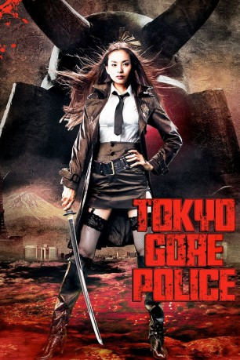

#10037 Tokyo Gore Police
 
 IMDB-Wertung: 6.0 / 10
IMDB-Wertung: 6.0 / 10  Metascore: 0
Metascore: 0 
Japan in einer nicht allzu fernen Zukunft: Um dem Verbrechen schlagkräftig Einhalt zu gebieten, wurde die Polizei privatisiert. Die Tokyo Police Corporation geht mit aller Härte gegen jede Form des Unrechts vor und kennt nahezu keine Grenzen bei der Pflichtausübung. Doch eine Bande von Superschurken, genannt "Die Ingenieure", stellt die Polizei vor unlösbare Aufgaben. Mit Hilfe von Genmanipulation sind die Verbrecher in der Lage, sich durch Mutationen zu fast unbesiegbaren Kampfmaschinen hochzurüsten. Nur die junge Polizistin Ruka scheint dieser Bedrohung gewachsen zu sein. Doch sie hat nicht nur das Gesetz vor Augen, wenn sie auf ihre unbarmherzige Mutantenjagd geht, denn der Anführer der Gen-Gangster hat ihren Vater auf dem Gewissen. Doch um Rache an ihm zu nehmen, muss sich Ruka erst durch ganze Gangsterhorden metzeln. Ein Weg, den sie all zu gerne in Kauf nimmt.
Jahr: 2008
Dauer: 109 Minuten
FSK: 18
Land: USA Studio: Media BlastersTonspuren:
Untertitel: Deutsch,
Auflösung: 1080p (1920x1080) Größe: 8130 MB
Genre: Action, Horror, Sci-Fi, Komödie
Regisseur: Yoshihiro Nishimura
Drehbuch: Kengo Kaji, Maki Mizui, Yoshihiro Nishimura, J.J. Vallejo
Soundtrack: Kou Nakagawa
Darsteller:
- Eihi Shiina als Ruka
- Itsuji Itao als Key Man & His Father
- Tsugumi Nagasawa als Alligator Girl
- Sion Sono als
- Tokitoshi Shiota als
 Yutaka Mishima als
Yutaka Mishima als  Tak Sakaguchi als Koji Tanaka
Tak Sakaguchi als Koji Tanaka Bob Buchholz als Chief
Bob Buchholz als Chief Mari Devon als Emu
Mari Devon als Emu Dorothy Elias-Fahn als Crocodile Woman / Ruka's Mother
Dorothy Elias-Fahn als Crocodile Woman / Ruka's Mother Jessica Gee-George als Mama
Jessica Gee-George als Mama Grant George als Riot Squad
Grant George als Riot Squad Steve Kramer als Barabara Man
Steve Kramer als Barabara Man- Camille LaBry West als Raku
 Bryce Papenbrook als Otaku / Subordinate
Bryce Papenbrook als Otaku / Subordinate Stephanie Sheh als DJ Officer
Stephanie Sheh als DJ Officer Dan Woren als Keyman
Dan Woren als Keyman- Yukihide Benny als TOKYO POLICE Chief Officer
- Jiji Bû als Barabara-MAN
- Ikuko Sawada als Bar INDEPENDANT Owner
- Cay Izumi als Dog Girl
- Mame Yamada als
- Ayano Yamamoto als
- Akane Akanezawa als
- Maiko Asano als
- Daisuke Matsuki als
- Naofumi Murata als
- Takashi Shimizu als
- Oppe Ma als
- Keisuke Toyoshima als
- Makoto Kamiya als
- Demo Tanaka als
- Naoto Tanobe als
- Cherry Kirishima als
- Maki Mizui als Snail Girl
- Kazuyuki Tsumura als
- Koto Shiraishi als
- Mikiko Tsubakihara als
- Junko Takai als
- Maki Hamada als
- Yoshio Komatsu als
- Yûta Okuyama als
- Earth Ana als
- Arata Yamanaka als
- Makoto Fukufuku als
- Taiga Ishino als
- Kazuhide Shimohata als
- Yoshihiro Nishimura als
- Karin als
- Roxy als
Datei: X:\FSK18-Eastern\Tokyo Gore Police (2008, FSK18, 1920x1080).mkv seit 21.11.2018
Festplatte: FSK18
 Es gibt insgesamt 102 Filme in der Gruppe 'FSK18-Eastern'
Es gibt insgesamt 102 Filme in der Gruppe 'FSK18-Eastern'